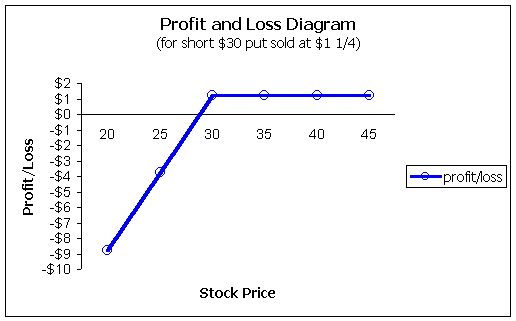

A put option gives the buyer the right, but not the obligation, to sell stock for a fixed price over a given amount of time. It is the put buyer, also called the long position, who has the right to sell stock. The short put seller, on the other side of the trade, has the obligation to purchase stock if the long position exercises their option. There should be no concern for default by the short side as the Options Clearing Corporation (OCC) guarantees the performance of the contract.
The long put strategy is therefore bearish, as the value of the put rises with decreases in the underlying stock. Please understand when we say that the put will rise if the underlying falls, that is assuming all other factors remain the same. It is entirely possible for the put to fall in value even though the underlying is falling, but this is usually due to changes in other factors such as time or volatility.
Investors are typically attracted to the long put strategy for two main reasons:
1) Leverage
2) Protection (hedge)
Long put options provide more leverage than short stock for speculators who are bearish. In other words, for a given dollar investment, the return on investment for the owner of a put option is much higher as compared to the investor who shorts stock. However, this leverage works both ways. The long put owner may lose 100% of their investment with just a small adverse move, whereas the short seller will lose only a small fraction.
You are bearish on Intel (INTC) currently trading for $31-3/4. Let's compare a short seller with a long put buyer.
With short sales, there is usually more leverage than with the purchase of stock. The reason is that most speculators will only post the required Reg T amount of 50%.
If a speculator wants to short 1,000 INTC, they would need to post a minimum of 50%, so the total credit would be $31-3/4 * 1.5 * 1,000 = $47,625. Remember, when you short stock, you receive a credit; you will purchase the stock later for a debit.
The accounting looks like this:
Credit = $47,625
MVS = $31,750
Equity $15,875
Notice that your equity is $15,875 and when divided by the market value short of $31,750 gives you 50% equity, which is the Reg T amount.
Let's assume the stock falls to $25 per share. Now the account looks like this:
Credit = $47,625
MVS = $25,000
Equity $22,625
Notice that the credit balance does not change; it is simply cash sitting in the account. The market value short (MVS) will change which will change your equity. If the MVS falls, your equity will rise and vice versa.
The stock fell, in this example, about 21% from $31 3/4 to $25 giving the investor a 42% increase in equity from $15,875 to $22,625. The reason the investor doubled the move of the stock is because they only posted 50% of the requirement which doubles the leverage.
Let's look at the puts now. A March $30 put is $1 1/4 and an investor could instead elect to purchase 10 contracts to control 1,000 shares and pay only $1 1/4 * 10 * 100 = $1,250. Later, with the stock at $25, the $30 put will be worth at least $5 (more if there is some time remaining on the option). Here the investor paid $1 1/4 but sells for $5 (and maybe more) for a minimum 300% increase.
Your return on the short stock is 42% (not annualized) while the return on the option is 300% (not annualized). This is what they mean by leverage. The investor who bought the put options, in this example, has a return on investment that is over 7 times higher as compared to the short stock trader.
What if the stock rises substantially? The short stock position has an unlimited amount of risk as a stock can keep rising without bounds. The long put holder, however, is only at risk for the $1 1/4 points regardless of how high the stock moves. Therefore, the long put holder also gets a "peace of mind" by holding the option; they know the maximum loss up front.
As with call options, one must be careful in interpreting return on investment. In the above example, the option trader had a much higher return on investment (300% vs. 42%). However, the short stock position has more dollars. The short stock seller gained $6,750 while the option trader gained $3,875. This will always be the case, as the put buyer must pay some sort of premium. The smaller the premium, the more the total dollars will match that with the stock trader.
We can see the effect of the protection by the profit and loss diagram above (if you are not sure how to read this chart, please see our section under "Profit and Loss Diagrams"). Again, the most the option investor can lose is the $1,250 paid for the 10 put contracts. Yet, they participate in all of the downside moves below the $30 strike price.
This added upside protection does not come for free. We can also see that the break-even point is lowered from $30 to $28-3/4 for the put buyer.
Long puts can also be used as an "insurance policy" against long stock. Say you own 1,000 shares of Intel so your total position is worth $31,750, but you fear it may fall in the short term. You can purchase 10 of the $30 strike puts for $1-1/4 (which raises the cost basis of your long shares by the same amount), and be hedged for all prices below $30. For example, assume the stock falls to $25. Your stock is now worth $25,000, which is down $6,750. But your long $30 put is worth at least $5,000. At expiration, you can elect to do one of two things:(1) hang on to your stock and sell the put for $5,000; this will help to offset the $6,250 loss, or (2) Exercise your put and sell your shares for $30.
Notice that the put, at expiration, is worth $5,000 yet the long stock position was down $6,750 for a difference of $1,250. This is the cost of the put, and it will never be recouped.
Long puts can be especially useful if you trade stocks on margin and are close to a maintenance call. Sometimes it is worth a little bit of money to insure yourself from a forced sale of your stock.
If you didn't want to spend $1-1/4 for the put option, you may decide to buy a lower strike put such as the $25 strike. The $25 will be cheaper than the $30 because you are, in effect, assuming a $5 point deductible as compared to the $30 strike. In other words, protection with the $25 strike will not start until the stock is trading below $25. As with any insurance policy, the higher the deductible, the lower the premium.
The strategy behind the naked (or uncovered) put is neutral to bullish. The investor is betting that the stock will either rise or sit still. Another strategy for short put sellers is to use short puts as a way to purchase stock. In other words, it changes the scope of the investment if you are selling puts on stock you want to purchase anyway. Selling puts against stock that you don't mind owning is similar to getting paid to place buy limit orders below the current market.
For example, using the above INTC prices, say you want to purchase shares of Intel, but you think it may fall to $28 in the short term. Many investors would place a buy order with a limit of $28 and just hope it hits. If it doesn't, they have completely missed any profitable opportunity. Compare this to the short put seller. The short put seller may want to purchase the stock, but is afraid it may fall to $28. This investor sells the $30 put for $1-1/4. Now, if the stock rises, at least this investor receives $1-1/4. If the stock falls to $28 at expiration, the short put seller will be forced to buy a $28 stock for $30; however, they received $1-1/4 for it, which makes their cost basis $28-3/4. Granted, their cost basis is a little higher than the investor who used the limit order. But the limit order will have zero profit if the stock rises; they miss out on all opportunities.
Using short puts as a way to purchase stock you want to own can be a tough strategy to beat!
From a profit and loss standpoint, the short put looks like this:
We see the maximum this investor can make is the $1-1/4 points from the sale. But if the stock falls, the investor starts heading into losses. Keep in mind that if you are willing to purchase the stock regardless, then it's difficult to say these are truly losses, at least when compared to a speculator who sells puts with the intention of never buying the stock. The short put seller who intends to purchase the stock is, in fact, potentially deferring the purchase but getting paid if it rises. If the stock falls, he may be forced to buy stock, but he was going to purchase it anyway. Now, the big tradeoff with the short put selling for stock you want to buy is this: the stock may take off to the upside, and you're left with only the premium from the put.
An alternative hedging strategy is to do the following: Buy half the amount of shares you are willing to purchase and sell puts on half the shares. Using the above Intel example, if you are willing to purchase 1,000 INTC today, maybe just buy 500 shares and sell $5 for the $30 puts. Now, if the stock moves higher, you will profit on the 500 shares plus the premium from the puts. If it moves down, you were willing to assume this risk anyway, but now you've lowered your cost basis by $1-1/4 on the additional 500 shares.
Put options are great tools for hedging. However, be careful in using puts as an ongoing form of insurance. The reason is due to the relatively high costs of puts. It's not uncommon to see put option premiums reach 20% (or more) of the underlying stock price on an annualized basis. Historically, stocks have returned about 12% per year so if you use puts as a continuous form of insurance, you'll be losing at an annual rate of about 8%. Instead, use puts for specific points in time that concern you such as upcoming earnings reports or other announcements that may affect your stock. If you want to speculate on stock prices, using puts may be a better bet than shorting stock once you understand all the risks.